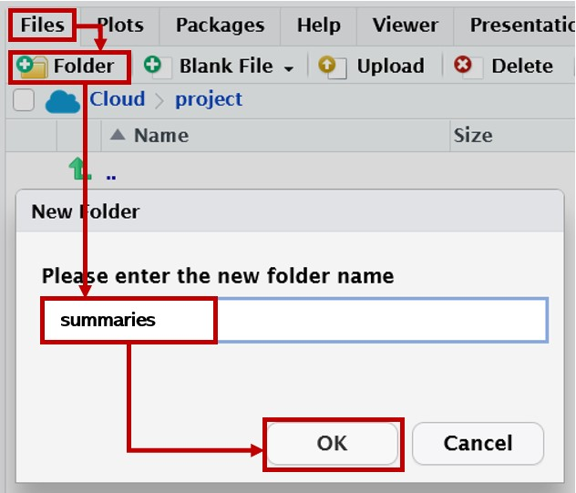
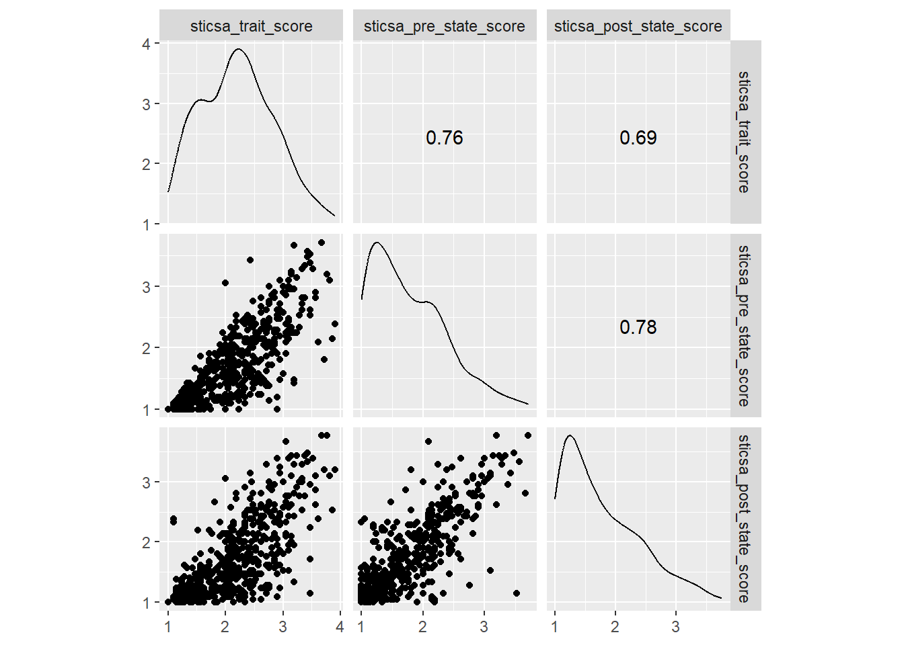

library(dplyr)
## OR
library(tidyverse)
library(GGally)
library(correlation)
library(kableExtra)07: Summarise
Overview
This tutorial focuses on the {dplyr} function summarise() for creating summaries of datasets, alongside the helper function group_by() that allows new variables or summaries to be created within subgroups.
We will also explore how to turn those summary tables into nicely formatted tables, both within and outside of Quarto documents/the R ecosystem.
Setup
Packages
We will again be focusing on {dplyr} today, which contains both of our main functions. You can either load {dplyr} alone, or all of {tidyverse} - it won’t make a difference, but you only need one or the other.
We’ll also need {GGally} for correlograms, {correlation} for, well, I’ll give you three guesses!, and {kableExtra} for table formatting.
Data
Today we’re continuing to work with the same dataset as last week. Courtesy of fantastic Sussex colleague Jenny Terry, this dataset contains real data about statistics and maths anxiety.
Codebook
This dataset is an updated version of the anx_data dataset we were working with previously. Since we covered recoding scores and calculating composites in the tutorial on mutate(), this dataset contains subscale scores for the various questionnaires, rather than individual item scores.
Dataset Info Recap
This study explored the difference between maths and statistics anxiety, widely assumed to be different constructs. Participants completed the Statistics Anxiety Rating Scale (STARS) and Maths Anxiety Rating Scale - Revised (R-MARS), as well as modified versions, the STARS-M and R-MARS-S. In the modified versions of the scales, references to statistics and maths were swapped; for example, the STARS item “Studying for an examination in a statistics course” became the STARS-M item “Studying for an examination in a maths course”; and the R-MARS item “Walking into a maths class” because the R-MARS-S item “Walking into a statistics class”.
Participants also completed the State-Trait Inventory for Cognitive and Somatic Anxiety (STICSA). They completed the state anxiety items twice: once before, and once after, answering a set of five MCQ questions. These MCQ questions were either about maths, or about statistics; each participant only saw one of the two MCQ conditions.
Important
For learning purposes, I’ve randomly generated some additional variables to add to the dataset containing info on distribution channel, consent, gender, and age. Especially for the consent variable, don’t worry: all the participants in this dataset did consent to the original study. I’ve simulated and added this variable in later to practice removing participants.
Summarising
The summarise() function looks almost exactly like mutate(), which was covered in the previous tutorial. The difference is that mutate() creates or replaces variables within the same dataset, while summarise() creates a new summary dataset without changing the original.
dataset_name |>
dplyr::summarise(
variable_name = instructions_for_creating_the_variable
)variable_name is the name of a variable that will be created in the new summary tibble. This can be any name that follows R’s object naming rules.
instructions_for_creating_the_variable tells the function how to create variable_name. The instructions can refer to variables in the piped-in dataset, but should output a single value, rather than a vector of values (as we saw in mutate()).
Overall
Let’s have a look at an example of this. We looked previously at sticsa_trait_score, so we might want to get some summary info about this variable, such as the mean and standard deviation. To do this, we create a new variable for each descriptive value we want to create on the left side of the =, and instructions for creating that summary on the right.
To help us out with our summaries, we’ll also bundle in a bonus new function while we’re at it. Unassuming little dplyr::n() has one job: counting the number of cases. Right now it’s not telling us much that’s new…but that will change in a bit!
Putting that all together, here’s an example of how that works:
1anx_scores |>
dplyr::summarise(
2 n = dplyr::n(),
3 sticsa_trait_mean = mean(sticsa_trait_score, na.rm = TRUE),
4 sticsa_trait_sd = sd(sticsa_trait_score, na.rm = TRUE),
)- 1
-
Take the dataset
anx_scores, and then produce a summary as follows: - 2
-
Count the number of cases and store it in the variable
n - 3
-
Calculate the mean of the
sticsa_trait_scorevariable (ignoring any missing values) and store it in the variablesticsa_trait_mean - 4
-
Calculate the standard deviation of the
sticsa_trait_scorevariable (ignoring any missing values) and store it in the variablesticsa_trait_sd
Internal Calculations
A very useful feature of these functions - both mutate() and summarise() - is that once you create a variable within the function, you can use it in subsequent arguments to that function.
For instance, let’s say we want to include standard error in our summary as well. Unfortunately there’s no base se() function (along the lines of sd()). There are functions in other packages, such as papaja::se(), that you could find by searching for “standard error” in the Help tab (in the Files pane); but it might not always be a good idea to use single functions from other packages, since you will have to (remember to) install/update those packages. This would be worth it if that function did an operation that would otherwise be difficult or labor-intensive to replicate, but in this case, standard error is a straightforward mathematical operation: namely, the standard deviation divided by the square root of N. We’ve already created a variable that contains the SD, and we have the dataset and we know how to count the number of cases so, let’s just do it by hand.
anx_scores |>
dplyr::summarise(
n = dplyr::n(),
sticsa_trait_mean = mean(sticsa_trait_score, na.rm = TRUE),
sticsa_trait_sd = sd(sticsa_trait_score, na.rm = TRUE),
sticsa_trait_se = sticsa_trait_sd/sqrt(n)
)In the last line creating sticsa_trait_se, both sticsa_trait_sd and n are variables created previously in the same summarise() command. So, the new variables in summarise() are immediately available on subsequent lines to use in further calculations.
MoRe About: Code Order
It’s important to note from the above that the new variables created are immediately available in subsequent lines. As always, it’s essential to remember that code is ordered sequentially. The same lines within summarise() will not evaluate correctly if they are out of order:
anx_scores |>
dplyr::summarise(
n = dplyr::n(),
sticsa_trait_mean = mean(sticsa_trait_score, na.rm = TRUE),
## SE line moved up before SD line
## So attempting to use sticsa_trait_sd` before it is created
sticsa_trait_se = sticsa_trait_sd/sqrt(n),
sticsa_trait_sd = sd(sticsa_trait_score, na.rm = TRUE)
)Error in `dplyr::summarise()`:
ℹ In argument: `sticsa_trait_se = sticsa_trait_sd/sqrt(n)`.
Caused by error:
! object 'sticsa_trait_sd' not foundBy Group
Next, let’s combine dplyr::summarise() with the helper function dplyr::group_by() to split up the summary calculations by the values of a grouping variable.
Similar to what we saw with rowwise(), group_by() creates an internal structure in the dataset: a new group for each unique value in the grouping variable. Any subsequent calculations done with the dataset are done within those groups.
1anx_scores |>
2 dplyr::group_by(mcq) |>
3 dplyr::summarise(
4 n = dplyr::n(),
sticsa_trait_mean = mean(sticsa_trait_score, na.rm = TRUE),
sticsa_trait_sd = sd(sticsa_trait_score, na.rm = TRUE),
sticsa_trait_se = sticsa_trait_sd/sqrt(n)
)- 1
- Take the dataset, and then
- 2
-
Group by the values in the
mcqvariable, and then - 3
- Produce a summary table with the following variables:
- 4
-
Number of cases, mean, SD, and SE of the
sticsa_trait_scorevariable.
Compare this to the ungrouped summary in the previous section - it’s the same columns, but a new row for each group. We also see here that little dplyr::n() is a bit more useful now - giving us counts within each group alongside the other summary information, which also means that the standard error can be calculated for each group separately as well.
Multiple Variables
Despite the versatility of summarise(), you may have already noticed that the code covered so far is very typing-intensive if you want information about more than one variable. This is neither efficient nor particularly enjoyable to write, read, or use:
## Down with this sort of thing!
anx_scores |>
dplyr::group_by(mcq) |>
dplyr::summarise(
## Summary info about stica_trait_score
sticsa_trait_mean = mean(sticsa_trait_score, na.rm = TRUE),
sticsa_trait_sd = sd(sticsa_trait_score, na.rm = TRUE),
sticsa_trait_se = sticsa_trait_sd/sqrt(n),
sticsa_trait_min = min(sticsa_trait_score, na.rm = TRUE),
sticsa_trait_max = max(sticsa_trait_score, na.rm = TRUE),
## Summary info about stars_test_score
stars_test_mean = mean(stars_test_score, na.rm = TRUE),
stars_test_sd = sd(stars_test_score, na.rm = TRUE),
stars_test_se = sticsa_trait_sd/sqrt(n),
stars_test_min = min(stars_test_score, na.rm = TRUE),
stars_test_max = max(stars_test_score, na.rm = TRUE)
## And so on...
)If we wanted to also include, for instance, range and CIs, this code would quickly become unmanageably long and difficult to read, not to mention increasingly prone to copy/paste and find/replace mistakes. (I’ve actually made one above - can you spot it?)
Remember, if you have to copy/paste more than once, use a function instead.
There are two main solutions to this issue, and which you choose depends on what you want the output to contain and how much work you want to put into reading the help documentation of various functions.
Use an Existing Function
Choose this option if:
- You just want standard descriptives
- You don’t mind reading up in the help documentation to get the right combination of arguments, and/or trying out a few different functions/packages to find the one that works for you.
As we saw in Tutorial 03, there are existing functions that output pre-made summaries across multiple variables. If you revisit datawizard::describe_distribution(), you will find in the help documentation that it can utilise <tidyselect> syntax to select the variables you want, and the output can even be forced into a tibble for further wrangling.
Iteration
Choose this option if:
- You want custom or complex summary information
- You want grouped summaries
- You just want to do everything yourself so you know it’s exactly right.
Warning
This material may not be covered in the live workshops, depending on time. It’s included here for reference because it’s extremely useful in real R analysis workflows, but it won’t be essential for any of the workshop tasks.
The big, inefficient multi-variable summarise() command above has two main issues to resolve.
- We had to type the same functions over and over (i.e.
mean()andsd()are repeated for each variable). - We had to manually type in each variable name we want to use (i.e.
sticsa_trait_mean = ..., sticsa_trait_sd = ...)
To solve the first issue, we’ll create a list of functions to use, so we only have to type out each function once. To solve the second, we’re going to utilise dplyr::across() to apply that list of functions to variables selected with <tidyselect>.
Tip
For more explanation about dplyr::across(), see the section on iteration with mutate() earlier on. For a much more in-depth explanation, run vignette("colwise") in the Console.
1fns <- list(
2 n = ~ dplyr::n(),
mean = ~ mean(.x, na.rm = TRUE),
sd = ~ sd(.x, na.rm = TRUE),
se = ~ sd(.x, na.rm=TRUE)/dplyr::n(),
min = ~ min(.x, na.rm = TRUE),
max = ~ max(.x, na.rm = TRUE)
)
3anx_scores |>
dplyr::group_by(mcq) |>
dplyr::summarise(
4 across(
.cols = contains("stars"),
5 .fns = fns
)
)- 1
-
Create an object (here
fnsshort for “functions”) that contains a list of… - 2
-
Named elements, each of which contains a function written as a
purrr-style lambda. - 3
-
Take the
anx_scoresdata, and then group by MCQ type, and then summarise it as follows: - 4
-
Across all of the variables in the
anx_scoredataset whose names contain the string “stars”, - 5
-
Apply the list of functions stored in the
fnsobject.
To recap briefly, the elements in the fns list have a special format. The first bit, e.g. mean =, gives each element a name. This name will be appended to the relevant column in the summarise() output, so choose something informative and brief. (Here the formulae are named the same as their functions, but this doesn’t have to be the case.) The second bit, e.g. ~ mean(.x, na.rm = TRUE), is the function we want to apply to each variable. The two things to note are the “twiddle” ~, which denotes “this is a function to apply”, and .x, which is a placeholder for each of the variables that the function will be applied to.
Within across(), we are building on what we’ve seen before with this function. The first argument, .cols, selects which variables (columns) to use, using <tidyselect> or any other select() syntax. In this case, I’ve selected all of the variables that contain the string “stars”. The second argument provides a list of function(s) to apply to all of the selected variables, which here is the fns object.
This function list + dplyr::across() method is extremely versatile. If you are using a lesser-known statistical technique, or even functions of your own making, you can easily add them to your list of functions and apply them with across().
MoRe About: Function Lists
As a final note here, the creation of the fns object containing a list of functions isn’t technically necessary - you can just provide the list in across directly.
anx_scores |>
dplyr::group_by(mcq) |>
dplyr::summarise(
across(
contains("stars"),
list(
mean = ~ mean(.x, na.rm = TRUE))
)
)Personally, I would prefer to make a separate object for three reasons:
- I could reuse the same list of functions later on in my code without having to copy/paste.
- I can update that single list of functions to update any summaries created with it.
- The code is cleaner and easier to read, especially the
across()command.
Exercises
Formatting Tables
Once we have these lovely summary tables, it would be great to include them in a report or paper, but they definitely need some formatting first. How to proceed depends on whether you are expecting to use Quarto itself for your formal reporting - and then further, what output format you will render to - or another programme (for instance, Microsoft Word).
Quarto to HTML/PDF
For UG teaching at Sussex, we have students render their assignments in Quarto to HTML, which is the default rendering output. The following techniques will also work for rendering to PDF, although this can get ComplicatedTM. Even if you plan to write up your final work in a different programme, it’s a good idea to render your analysis document anyway (to check for errors and review the results), and at least some basic formatting will make that output much more readable.
For this purpose we’ll be working primarily with the {kableExtra} package, which builds on the {knitr} package for report generation. We’ll be using a wrapper for the knitr::kable() function, kableExtra::kbl(), because {kableExtra} has a bunch of useful tools for customising the output. However, you may also want to check out the {gt} package for powerful table formatting options, and {papaja} for some APA-like defaults.
Tip
For all things kable, the Create Awesome HTML Table vignette is my go-to for options and examples.
To begin, let’s take the summarise() code we were working with above, grouped by mcq only, and save it in a new object. Then, pipe that new summary dataset object into the kableExtra::kbl() function, and then on again into the kableExtra::kable_classic() function. This one-two combo first creates a basic table out of the dataset (kbl()), then applies some APA-ish HTML formatting (kable_classic()).
anx_mcq_sum <- anx_scores |>
dplyr::group_by(mcq) |>
dplyr::summarise(
n = dplyr::n(),
sticsa_trait_mean = mean(sticsa_trait_score, na.rm = TRUE),
sticsa_trait_sd = sd(sticsa_trait_score, na.rm = TRUE),
sticsa_trait_se = sticsa_trait_sd/sqrt(n),
sticsa_trait_min = min(sticsa_trait_score, na.rm = TRUE),
sticsa_trait_max = max(sticsa_trait_score, na.rm = TRUE)
)
anx_mcq_sum |>
kableExtra::kbl() |>
kableExtra::kable_classic()| mcq | n | sticsa_trait_mean | sticsa_trait_sd | sticsa_trait_se | sticsa_trait_min | sticsa_trait_max |
|---|---|---|---|---|---|---|
| maths | 233 | 2.168437 | 0.6462829 | 0.0423394 | 1.000000 | 3.904762 |
| stats | 232 | 2.248214 | 0.6103040 | 0.0400684 | 1.095238 | 3.714286 |
So, already we have some basic formatting. There are a few things to do to make this table Look Nice:
- Format the column names
- Round the values to two decimal places.
- Align the columns in the center.
- Add a caption (optional).
- Capitalise the values “maths” and “stats” in the first column (optional)
For all but the last task, we can adjust these things in kbl(), which has col.names, digits, align, and caption arguments.
anx_mcq_sum |>
kableExtra::kbl(
col.names = c("MCQ Type", "N", "M", "SD", "SE", "Min", "Max"),
digits = 2,
align = "c", # or l for left or r for right, or provide a vector of alignments for each column
caption = "Descriptives for STICSA Trait Anxiety Score by MCQ Type",
) |>
kableExtra::kable_classic()| MCQ Type | N | M | SD | SE | Min | Max |
|---|---|---|---|---|---|---|
| maths | 233 | 2.17 | 0.65 | 0.04 | 1.0 | 3.90 |
| stats | 232 | 2.25 | 0.61 | 0.04 | 1.1 | 3.71 |
Error Watch: dimnames not equal to array extent
This error is unfortunately both very easy to generate and totally opaque. All it usually means is that the number of names (“dimnames”) you have given col.names isn’t the same as the number of columns in the dataset you’re formatting (the “array extent”).
anx_mcq_sum |>
kableExtra::kbl(
## if I forget to include a column name for the MCQ grouping variable
col.names = c("N", "M", "SD", "SE", "Min", "Max"),
digits = 2,
caption = "Descriptives for STICSA Trait Anxiety Score by MCQ Type",
align = "c"
) |>
kableExtra::kable_classic()Error in dimnames(x) <- dn: length of 'dimnames' [2] not equal to array extentTo fix it, just double-check the columns in the dataset and make sure that the col.names names contain a one-to-one match for each.
Tip
For the caption, keep in mind if this table will be in a longer Quarto report, you might want to instead use cross-referencing and table captions via Quarto code chunk options instead of within kbl().
For the last task, capitalising the values in the MCQ column, we’ll have a first, brief brush with text string manipulation. Working with strings is well outside the scope of this tutorial, but for simple operations, this is a good opportunity to meet the {stringr} package.
{stringr} is a tidyverse package designed to make string manipulation simple and easy. Among (many!) other functions, it has some very handy functions for converting strings into particular capitalisation patterns. Here str_to_sentence() (for sentence case, with the first letter of the string capitalised) or str_to_title() (for title case, with the first letter of each word in the string capitalised) will do the same job.
Since our summary tibble anx_mcq_sum is just a dataset, we can make a change to the values in the mcq column just as we have seen before with mutate(), before passing it on to kbl().
anx_mcq_sum |>
dplyr::mutate(
mcq = stringr::str_to_sentence(mcq)
) |>
kableExtra::kbl(
col.names = c("MCQ Type", "N", "M", "SD", "SE", "Min", "Max"),
digits = 2,
align = "c", # or l for left or r for right, or provide a vector of alignments for each column
caption = "Descriptives for STICSA Trait Anxiety Score by MCQ Type",
) |>
kableExtra::kable_classic()| MCQ Type | N | M | SD | SE | Min | Max |
|---|---|---|---|---|---|---|
| Maths | 233 | 2.17 | 0.65 | 0.04 | 1.0 | 3.90 |
| Stats | 232 | 2.25 | 0.61 | 0.04 | 1.1 | 3.71 |
At this point we have quite a clean, nicely formatted, and professional-looking table. Finally, render your workbook document to see your hard work in all its glory!
Regex: Capitalisation
I (JM) really love regular expressions (“regex”). If you’re not familiar with regex, it’s essentially its own mini-language for identifying patterns in character strings. Regex is slow, frustrating, and headache-inducing to learn (at least it was/is for me!), but it’s also the closest I’ve got with R to actual wizardry.
Since I love regex so much and this is my tutorial and no one can stop me, I’ll include these absolutely optional little regex boxes in case you’d like to learn a bit about working with regular expressions and how they can help your code. Most typically, I prefer base-R functions instead of {stringr} for working with strings, but for quick things like case changes, I find {stringr} easiest. However, the same thing can be accomplished with regular expressions instead.
We already saw how to convert strings to sentence case in the example above. However, all we’ve actually done is replaced the first letter of the string with the capitalised version of the same letter. If you happen to want to do this with base R regex instead, here’s an option:
anx_mcq_sum |>
dplyr::mutate(
## Substitute the first character in the string with uppercase
mcq = gsub(pattern = "^(.)",
replacement = "\\U\\1",
x = mcq,
perl = TRUE)
)The gsub() function is a regex workhorse. It generally substitutes every match to a particular pattern with a given replacement. (It has a twin, sub(), that only substitutes the first match rather than all of them.)
The three main arguments of gsub() are as follows.
pattern: the regex pattern to search for.replacement: the replacement to substitute for any matches.x: the string (or vector of strings) to operate in.
This example also includes the argument perl = TRUE for ReasonsTM (it’s to make the "\\U" portion work).
Right, so what the hell is going on here? It’s a bit backwards in terms of the order of arguments, but let’s look at x first. The x argument essentially provides the data to work with. Here, since we’re inside mutate(), x = mcq means that the data to work with is the vector of all of the values in the mcq column. As a reminder, these values are:
anx_mcq_sum |>
dplyr::pull(mcq)[1] "maths" "stats"Next, let’s turn to pattern = "^(.)". The sequence in quotes is a regular expression to match with. Remember that regex is its own language - these symbols don’t have the same meaning as they do in regular R. This might look like a keysmash, but it has two elements:
^is the regex symbol to indicate the start of a string.(.)is a capturing group (indicated by round brackets) with a single wildcard in it (indicated by.) The wildcard.can be any character.
Together, the expression "^(.)" can be read as, “The first character in the string.” This is the pattern to match, so using this expression we’ve identified (in this case) the “m” in “maths” and the “s” in “stats”.
Finally, let’s look at replacement = "\\U\\1". Another keysmash! Remember that this argument gives the replacement for the matches to pattern. The \\1 is regex for “whatever’s in the first capturing group” (here, the “m” and “s”), and \\U means “convert to uppercase”.
Together, this regex can be read as, “Find the first character in each string, then replace that character with the uppercase version of the same character.”
Why do this instead of stringr::str_to_sentence()? In this specific case I’d use {stringr} myself, but the regex way has a couple of advantages:
gsub()and regex are base R, so there’s no need to install or load additional packages to use them.- This command can be generalised to substitute any match for any replacement, whereas the {stringr} function only does the one thing.
As a final example of 2, I could change this command to put anything I’d like at the start of the string:
anx_mcq_sum |>
dplyr::mutate(
mcq = gsub(pattern = "^(.)",
replacement = "REGEX IS FUN \\1",
x = mcq)
)
MoRe About: Dynaming Formatting
This lengthy and complicated optional aside is included for demonstration purposes only, and is well beyond what we have or will have covered in this tutorial.
As I (JM) use R more, I become increasingly allergic to hard-coding anything. In the table we’ve produced so far, we had to type in a vector of column names to apply. I would strongly disprefer this, since I would have to check and update these names each time - and it would be easy, if copy/pasting, to mistakenly mislabel a column. Instead, I’d prefer to have column names generated from the data, which are already systematically named.
The first bit below includes a good bit of base R and some jiggery-pokery to get only N and SD to be italicised. (Sorry.) This is the kind of puzzle that I find really useful for making myself learn things like regular expressions, but if this isn’t your bag, don’t worry!
The steps are annotated below, which together produce a vector of column names to pass to kbl().
## sub all instances of "sticsa_trait_" with an empty string
## Which just effectively deletes them
anx_mcq_names <- gsub(
pattern = "sticsa_trait_",
replacement = "",
x = names(anx_mcq_sum)) |>
## Then convert to title case
stringr::str_to_title() |>
## substitute all instances of either "Mcq", "Sd", "Se" to uppercase
## no x argument here because it's the first unnamed argument
## so piped in from above
gsub(pattern = "(Mcq|Sd|Se)",
replacement = "\\U\\1",
perl = TRUE)
## Check where we're at so far
anx_mcq_names[1] "MCQ" "N" "Mean" "SD" "SE" "Min" "Max" ## Replace the values in anx_mcq_names that match N, SD, or SE
anx_mcq_names[which(anx_mcq_names %in% c("N", "SD", "SE"))] <-
## with HTML italics formatting
paste(kableExtra::text_spec(
c("N", "SD", "SE"), italic = TRUE
), sep = "")
## View the final vector of column names
anx_mcq_names[1] "MCQ"
[2] "<span style=\" font-style: italic; \" >N</span>"
[3] "Mean"
[4] "<span style=\" font-style: italic; \" >SD</span>"
[5] "<span style=\" font-style: italic; \" >SE</span>"
[6] "Min"
[7] "Max" We can then replace the vector of names with the new vector we’ve just produced, adding escape = FALSE into the kbl() function so that the HTML formatting appears correctly.
Using the “Grouped Columns/Rows” section of the Awesome Tables vignette, we can also find the function add_header_above(), which requires us to specify which header we want above which columns using numbers. So, I have six total columns in the anx_mcq_sum summary dataset; I don’t want any header above the first two (“MCQ” and “N”), but I do want a header above the last five.
anx_mcq_sum |>
kableExtra::kbl(
col.names = anx_mcq_names,
digits = 2,
caption = "Descriptives for STICSA Trait Anxiety Score by MCQ Type",
align = "c",
escape = FALSE
) |>
kableExtra::add_header_above(c(" " = 2, "STICSA Trait Anxiety Score" = 5)) |>
kableExtra::kable_classic()| MCQ | N | Mean | SD | SE | Min | Max |
|---|---|---|---|---|---|---|
| maths | 233 | 2.17 | 0.65 | 0.04 | 1.0 | 3.90 |
| stats | 232 | 2.25 | 0.61 | 0.04 | 1.1 | 3.71 |
The magic of this approach is that it can be expanded to apply to as many inputs as you give it. Let’s take our iterated summary from the previous section and turn the code editing the names into a function, and then use that within kbl() to generate the column names.
I already said this above, but this involves custom function writing, regular expressions/{stringr}, and conditionally manipulating string vectors. This is included just to demonstrate that it can be done, but is definitely not within the skills covered in these tutorials.
## Save the summary dataset as a new object
## Using the fxs list of functions from before
anx_stars_sum <- anx_scores |>
dplyr::group_by(mcq) |>
dplyr::summarise(
across(contains("stars"), fns)
)
## Write a custom function to automatically format column names
format_kbl_colnames <- function(summary_data, all_caps = NULL, italics = NULL){
## Set column names to always capitalise and italicise
default_caps <- c("sd", "se", "n")
default_italics <- c("sd", "se", "n")
## Get initial vector of column names
kbl_colnames <- gsub(".*_(.*)", "\\1", names(summary_data)) |>
stringr::str_to_title()
## Identify which elements to convert to uppercase (in addition to defaults) and do so
capitalise_these <- kbl_colnames[which(tolower(kbl_colnames) %in% tolower(all_caps) | tolower(kbl_colnames) %in% default_caps)]
kbl_colnames[which(kbl_colnames %in% capitalise_these)] <- toupper(capitalise_these)
## Identify which elements to convert to italics (in addition to defaults) and do so
italicise_these <- kbl_colnames[which(tolower(kbl_colnames) %in% tolower(italics) | tolower(kbl_colnames) %in% default_italics)]
kbl_colnames[which(kbl_colnames %in% italicise_these)] <-
paste(kableExtra::text_spec(
italicise_these, italic = TRUE
), sep = "")
return(kbl_colnames)
}
## Create a named vector of formatted column names and counts for the header
header_vals <- tibble::tibble(
var = names(anx_stars_sum)
) |>
dplyr::mutate(
## This is a whole lot of string manipulation
## to turn variable names into human-readable ones
var = gsub("(.*_)(.*)(_score.*)", "\\U\\1\\E\\2", var, perl = TRUE) |>
gsub("_M", "-M", x = _) |>
gsub("_", " ", x = _) |>
gsub("(.*) (.)(.*)", "\\1 \\U\\2\\E\\3", x = _, perl = TRUE),
var = gsub("mcq", "MCQ", var)
) |>
## Have to use summarise(n()) here because count() reorders the levels
## Which would mean summary columns would be mislabeled!
dplyr::summarise(
n = dplyr::n(),
.by = var
) |>
## Turn the tibble into a vector
tibble::deframe()As if all that weren’t bad enough, this is one of those situations where the native pipe just doesn’t cut it. Using the {magrittr} pipe, we can easily use our new custom function inside our kbl() code.
anx_stars_sum %>%
kableExtra::kbl(
col.names = format_kbl_colnames(., all_caps = "mcq"),
digits = 2,
caption = "Descriptives for STARS subscales by MCQ Type",
align = "c",
escape = FALSE
) |>
## Use the vector to create headers
kableExtra::add_header_above(header_vals) |>
kableExtra::kable_classic()| MCQ | N | Mean | SD | SE | Min | Max | N | Mean | SD | SE | Min | Max | N | Mean | SD | SE | Min | Max | N | Mean | SD | SE | Min | Max | N | Mean | SD | SE | Min | Max | N | Mean | SD | SE | Min | Max |
|---|---|---|---|---|---|---|---|---|---|---|---|---|---|---|---|---|---|---|---|---|---|---|---|---|---|---|---|---|---|---|---|---|---|---|---|---|
| maths | 233 | 3.41 | 0.91 | 0 | 1.12 | 5 | 233 | 2.63 | 0.89 | 0 | 1 | 5.00 | 233 | 2.74 | 1.14 | 0 | 1 | 5 | 233 | 3.31 | 0.93 | 0 | 1 | 5 | 233 | 2.58 | 0.94 | 0 | 1 | 5.00 | 233 | 2.71 | 1.12 | 0 | 1 | 5 |
| stats | 232 | 3.43 | 0.82 | 0 | 1.25 | 5 | 232 | 2.57 | 0.83 | 0 | 1 | 4.82 | 232 | 2.93 | 1.10 | 0 | 1 | 5 | 232 | 3.27 | 0.87 | 0 | 1 | 5 | 232 | 2.44 | 0.83 | 0 | 1 | 4.88 | 232 | 2.79 | 1.04 | 0 | 1 | 5 |
So there you have it: a (mostly) fully automated and nicely formatted table requiring no hard-coding of specific names or variables, at the bargain price of a few precious hours of my life and a not-insubstantial chunk of my sanity.
Exporting
If you are writing your work exterior to Quarto/your code, you will instead need to export your summary and then import it into the new document. However, it’s essential to keep a close eye on changes or updates, so that tables don’t get out of date if the source data is updated.
Creating a Folder
We’ll first need to create a folder to save our summary tables in. You can (and likely will!) do this manually, by clicking. Both Posit Cloud and RStudio Desktop have a + Folder button (the first one in the Files tab), which will create a new folder in whatever folder you are currently looking at. Make sure you are in the project folder, then enter the folder name and click OK.

If you want your entire workflow to be entirely reproducible - even creating folders! - see the box below.
MoRe About: Managing Folders with R
The “problem” (such as it is) with creating folders by clicking is that there’s no record of that action in your code. If you pass on the code - but not the entire project folder - to someone else, and they try to run it, they’ll get an error because the target folder doesn’t happen to exist in their files. We could resolve this by using R to interact with the folders on your computer (or in your Cloud project) so that the folder is created by the code itself.
Let’s write some generalisable code to create a folder. To begin, we’ll store the path to the new folder in an object:
new_folder_path <- here::here("summaries")The next step could be to simply create the folder with dir.create():
dir.create(new_folder_path)But this operation will fail and throw a warning if the folder already exists. (This is great, as otherwise you could easily overwrite existing folders!) So, let’s instead write an if statement to only run this code if the specified folder doesn’t exist already.
if and other conditionals in R look a bit different than normal commands. The function if() needs a statement that evaluates to a single TRUE or FALSE. It’s then followed by additional code in curly braces {}. If the condition(s) in if() evaluate to TRUE, then the code in the curly braces is executed; if FALSE, they are not. (You can also supply an else, but we don’t need it here.)
So, to avoid alarming warnings or any accidental overwriting, we can write:
if(!dir.exists(new_folder_path)){
dir.create(new_folder_path)
}The function dir.exists(), as you might expect, looks for a folder at the supplied location (in this case, at the path we stored in new_folder_path), and returns TRUE if the directory exists or FALSE if it doesn’t. By adding an exclamation mark, we invert those results: now the expression !dir.exists(new_folder_path) returns TRUE if the folder doesn’t exist. That’s what we want because if the folder we want to create doesn’t already exist, then the next bit of code, dir.create(new_folder_path), is executed to create the folder. Otherwise, if the folder does already exist, nothing happens.
If you already created the summaries folder with the GUI interface, you will find that this code doesn’t do anything because the folder already exists!
In any case it’s important to think carefully about including any code that makes changes to the user’s computer system and files. I usually comment out these elements of my code unless I’m sure I need to use them.
Exporting
The summary data is just a dataset, so we can export it just as we did previously with whole datasets with write_csv(). We need to provide the name of the data to write and a file path that includes the name and file extension of the file we want to create.
readr::write_csv(
# Name of the object containing data to write
anx_scores_sum,
# File path where the file should be saved
# Including the name and file extension of the file itself
file = here::here("summaries/anx_scores_sum.csv"))RepRoducibility: Copying tables
At this point you will have a summary dataset, in the form of a CSV file, that you can then import or copy/paste into another document. This is an undocumented step - that is, a step that is not recorded anywhere in your code, just done manually. Naturally, you will need to be quite careful to cross-check the numbers and labeling produced by your summarising code vs the summaries in your final document, and remember to update or recreate any tables in separate documents if your data or analyses change.
Ideally, we would be able to link datasets like this to tables in other documents, so they would update automatically, as we will see is possible with images later on. Unfortunately this doesn’t currently appear to be easily accomplished, so vigilance and careful checking are needed!
Quick Test: Correlation
Whew! Well done so far; let’s cool down with some snazzy plots and a nice gentle correlation analysis.
This bit is meant to be quick, so we’ll only look briefly at what we teach in UG at Sussex. If you want more correlation fun, check out discovr tutorials 07 and 18.
Visualisation
In first year, we teach the function GGally::ggscatmat(), which is a quick way to generate a complex plot with lots of useful info, relatively painlessly. However, ggscatmat() (if you’re wondering, that’s G-G-scat-mat, like “scatterplot matrix”) will only work on numeric variables, so we’ll need to select() the ones we want first. Let’s return for this example to our familiar STICSA scores.
anx_scores |>
## starts_with() also fine in this case
dplyr::select(contains("sticsa")) |>
GGally::ggscatmat()
Tip
Functions like ggscatmat() output a special kind of plot created with {ggplot2}, another core {tidyverse} package. The lovely thing about ggplot-creating functions like this is that they do a lot of the heavy lifting of plot creation for you - getting a bunch of the complicated structure and setup out of the way - and then you can customise the plot further using {ggplot2}.
If you haven’t used {ggplot2} before, we’ll work through it systematically in an upcoming tutorial. If you can’t wait, check out:
- The R Graph Gallery
discovr_05on data visualisation with {ggplot2}- R for Data Science chapter 3
- This list of {ggplot2} resources
So, this single function gets us a pretty complex plot: a matrix containing all of our variables along the top and side, with density plots on the diagonal, scatterplots on one pairwise intersection, and correlation coefficients on the other.
This is the only {GGally} function we teach in UG at Sussex, but to go a bit further, there’s another example below as a challenge exercise that might be useful in the future.
Testing Correlation
In both first and second year, UGs are introduced to the tonguetwister function correlation::correlation() from the {easystats} family.
For any number of pairs of variables, including one, you can get easy pairwise correlations with this function. It also has a major upside of applying Holm p-value adjustments for multiple comparisons by default. It’s also delightfully easy to use (it is from the {easystats} family after all) - just select() the variables you want to correlate, for example the STICSA scales again, and then pipe them on into the function.
anx_scores |>
dplyr::select(contains("sticsa")) |>
correlation::correlation()Exercises